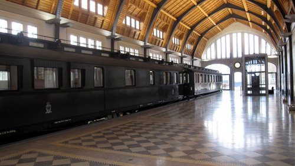

Potsdam Tournament! The playing hall I played on 13 till 14 October a tournament in the small city of Potsdam. It was a rapid tournament between 9 teams :The Netherlands, Germany, Poland, England, Czech Republic, Austria, Swiss, Russia and a chessclub from Berlin. It was a very good organised tournament in a really nice place. Each team consisted of 1 GM, the best two male players under 16 of the country, the best girl under 16, and 4 railwaymen because the tournament was organized by the Deutsche Bahn. In our team Jan Timman played on the first board, I played on the second board, Hing Ting Lai on the third, Anna Maja Kazarian on the fourth board and the railwaymen played from board five till board eigth. In the first round I played against the only woman that played on board two. I played a pretty nice game and won the game with a queen sacrifice.  This was the first game of the tournament and my opponent just played Kh1 thinking to be a pawn up when the unexpected happened....Qxf3 I think that this came
as a shock for my opponent. h3! I think the only chance because after gxf3 Bxf3 is mate! And
here I played ...Lg5 because now gxf3 Bxf3 Kh2 Bf4#!
Now White played Bd1 hoping to pin my knight but the only chance was hxg4 and after
Qxg4 Qd3 black is much better but white can still play on. Now I played
Qxh3 White is mated after gxh3 Bf3 Kh2 Bf4#! so white resigned.
This was the first game of the tournament and my opponent just played Kh1 thinking to be a pawn up when the unexpected happened....Qxf3 I think that this came
as a shock for my opponent. h3! I think the only chance because after gxf3 Bxf3 is mate! And
here I played ...Lg5 because now gxf3 Bxf3 Kh2 Bf4#!
Now White played Bd1 hoping to pin my knight but the only chance was hxg4 and after
Qxg4 Qd3 black is much better but white can still play on. Now I played
Qxh3 White is mated after gxh3 Bf3 Kh2 Bf4#! so white resigned.
In the second game I played against a boy rated over 2300. After the opening I gained some pressure and my opponent didn't know what to do but then I made a slight mistake and the game became equal again. But I still created problems for him and eventually he lost after defending for a while. In the third game I had black against a boy rated 2250. There came a sharp struggle on the board and after the opening I think I was equal with black. So I went looking for an advantage but I made a mistake and I was worse and in time trouble I didn't know what exactly happend but after some mistakes I lost quickly. In the fourth game I got a challenge: I played against a boy from Russia rated almost 2500. I was white and I played a solid line and I got an equal position. Then my opponent started doing some crazy things and we both got some weakneses. My weaknesses were around my king so I quickly traded queens. Then in the endgame I was slightly worse and after some defense I managed to make a draw. In the fifth I played against someone rated 2225 just like me. I was a bit tired from the previous game. I blundered and I quickly lost. This was the last game of that day and I was pretty tired. I had a Gala Dinner from eight till eleven o'clock. The next day I started afresh at my 7th game of the tournament. Full of good mood I played against the only GM on my board. Because this was the Berlin club team, the team consisted only of adult chess players. I played really well and was winning after some time. Then I became nervous and I got in time trouble and I forced a draw. Still I was very happy with the result. In the seventh game I had black against someone rated 2334. I think he was a pretty bad rapid player because I won quickly or he was just tired from the previous games anyway. I won very quickly with black. In the eigth game our team had a bye because there were nine teams. We were placed 4th because my team mates also performed really well. So after this rest I started my last game against Dennis Wagner Rated 2450. I made a mistake and I lost a pawn after some tactical tricks in the opening but I still had chances because my opponent was in time trouble and it wasn't too easy. My opponent exchanged then all pieces except for the Queens and hoped to stand better in the Queen endgame but there was a problem for him. There where 3 pawns of him under attack! My opponent should have forced a draw but he wanted to win and then I got a free pawn and blocked all his checks and won the game! Even our team won from Germany wich was the strongest team and we finished third overall. Finally I had 5 points out of eight. A really nice achievement and I am very happy with the result. I also was the best youth player. Therefore I got a very nice model train as prize. The final rankings: 1. Russia 2. Germany 3. the Netherlands! I the evening I played a blitz tournament and I achieved a shared third place after winning from a GM and several IMs. However I didn't got the 3th prize because another guy had more resistance poinst than I. It was also a really good organized tournament so I hope to participate next year too. |